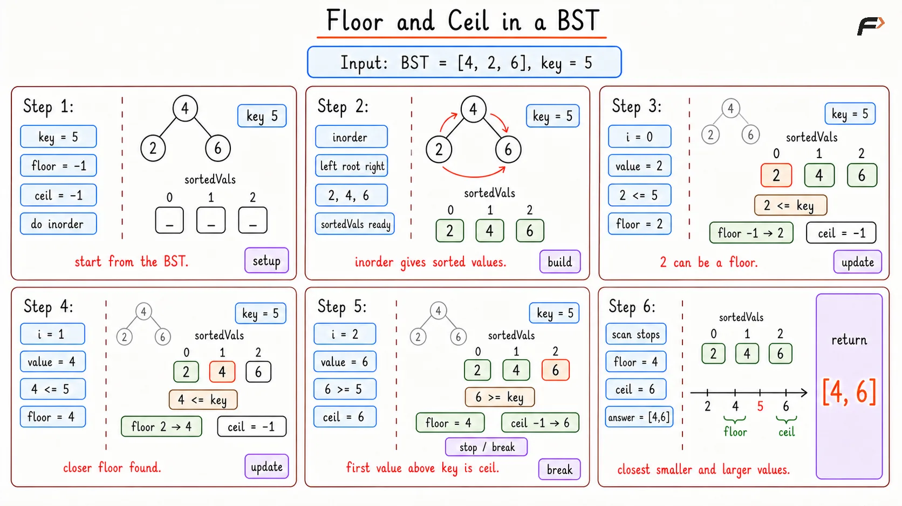
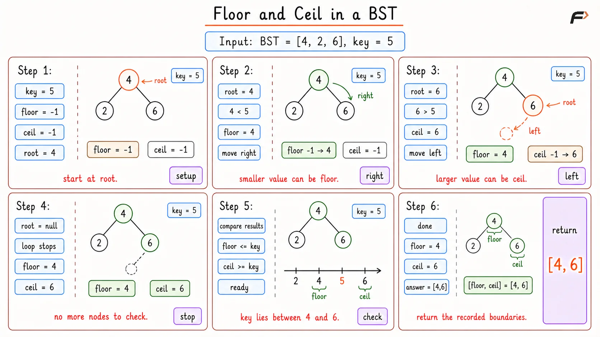

Floor and Ceil in a BST
In the Floor and Ceil in a BST problem, you are given the root node of a binary search tree and an integer key. Your objective is to find two specific values in the tree. The floor is the greatest value in the tree that is smaller than or equal to the key. The ceil (ceiling) is the smallest value in the tree that is greater than or equal to the key. You must return both values. If a floor or ceil does not exist, return -1 for that specific value.
Example 1
Input: root = [8, 4, 12, 2, 6, 10, 14], key = 5
Output: [4, 6]
Explanation: We are looking for the floor and ceil of 5. The largest number in the tree that is smaller than or equal to 5 is 4. The smallest number in the tree that is greater than or equal to 5 is 6.
Example 2
Input: root = [8, 4, 12, 2, 6, 10, 14], key = 8
Output: [8, 8]
Explanation: We search for the key 8. Because 8 exactly exists in the tree, both the floor and the ceil are exactly 8.
Brute Force Approach
We need to find the closest numbers to a specific target. Consider a real-world scenario where you want to buy a product that costs exactly 50 dollars. If you cannot find it, you want to know the closest cheaper option and the closest more expensive option. A straightforward way to do this is to visit every single store, write down all the prices in a sorted list from lowest to highest, and then scan your list from top to bottom until you spot where 50 belongs. In a binary search tree, doing an inorder traversal automatically gives us a perfectly sorted list of all numbers. We can then easily scan this list to find our floor and ceil.
Algorithm
Create an empty array to store the sorted values.
Perform a standard recursive inorder traversal (visiting the left child, then the current node, then the right child) to push all tree values into the array.
Initialize the floor and ceil variables to -1.
Scan the sorted array from start to finish.
While scanning, if you find a number less than or equal to the key, update the floor variable.
The very first time you find a number greater than or equal to the key, set the ceil variable and stop searching.
Dry Run

Find Floor and Ceil in BST Optimal Dry Run
Solution
// C++ program to implement Floor and Ceil in a BST
#include <bits/stdc++.h>
using namespace std;
/*
Definition for a binary tree node
*/
struct TreeNode {
int val;
TreeNode *left;
TreeNode *right;
TreeNode(int x) : val(x), left(nullptr), right(nullptr) {}
};
class Solution {
public:
/*
Helper function to extract all tree values in sorted order
by performing a standard inorder traversal
*/
void inorder(TreeNode* root, vector<int>& sortedVals) {
// Stop the recursion if the current node is empty
if (root == nullptr) {
return;
}
// Traverse the entire left subtree first
inorder(root->left, sortedVals);
// Store the value of the current node
sortedVals.push_back(root->val);
// Traverse the entire right subtree
inorder(root->right, sortedVals);
}
/*
Main function that builds a sorted list and scans it
to find the closest smaller and larger values
*/
vector<int> floorAndCeil(TreeNode* root, int key) {
// Vector to store the sorted tree values
vector<int> sortedVals;
// Call the helper function to fill the vector
inorder(root, sortedVals);
// Variables to track our answers, default is -1
int floorVal = -1;
int ceilVal = -1;
// Iterate through the sorted list of tree values
for (int i = 0; i < sortedVals.size(); i++) {
// Update floor if the current value is less than or equal to the key
if (sortedVals[i] <= key) {
floorVal = sortedVals[i];
}
// Set ceil and stop searching at the first value greater or equal to key
if (sortedVals[i] >= key) {
ceilVal = sortedVals[i];
break;
}
}
// Return both answers wrapped in a vector
return {floorVal, ceilVal};
}
};
// Driver code starts here
int main() {
// Build the sample tree
TreeNode* root = new TreeNode(8);
root->left = new TreeNode(4);
root->right = new TreeNode(12);
root->left->left = new TreeNode(2);
root->left->right = new TreeNode(6);
// Instantiate the solution class
Solution obj;
int key = 5;
// Retrieve the results
vector<int> ans = obj.floorAndCeil(root, key);
// Print the floor and ceil
cout << ans[0] << " " << ans[1] << endl;
return 0;
}Complexity Analysis
Time Complexity: O(N), where N is the total number of nodes in the tree. We visit every single node during the inorder traversal, and then we potentially scan the entire extracted array.
Space Complexity: O(N), because we store all the tree values inside a separate dynamic array, which requires memory proportional to the size of the tree.
Optimal Approach
The brute force approach is safe but highly inefficient regarding memory and time. We completely ignore the structural advantage of a binary search tree by extracting everything into an array. Because the tree is already sorted, we can use a single pointer to travel down the correct path, eliminating half the remaining tree at every step and avoiding any extra memory storage.
Think about a number guessing game where you are told if your guess is too high or too low. If you want to find a number close to 50, and you encounter 60, you know 60 is a potential ceiling. You write it down, but since it is too high, you walk down the lower path to find an even closer fit. If you then encounter 40, you write it down as a potential floor, and walk down the higher path to get closer. You use the structure of the paths themselves to narrow down your options without remembering the entire history.
Algorithm
Initialize two variables to track the floor and ceil, both set to -1.
Start a loop that continues as long as your current node pointer is not null.
If the current node value perfectly matches the key, then this value acts as both the floor and the ceil. Record it and immediately exit the loop.
If the current node value is strictly less than the key, it is a valid candidate for the floor. Update your floor variable. To find a closer number, move your pointer to the right child.
If the current node value is strictly greater than the key, it is a valid candidate for the ceil. Update your ceil variable. To find a closer number, move your pointer to the left child.
Return the finalized floor and ceil values.
Dry Run

Find Floor and Ceil in BST Brute Dry Run
Solution
// C++ program to implement Floor and Ceil in a BST
#include <bits/stdc++.h>
using namespace std;
/*
Definition for a binary tree node
*/
struct TreeNode {
int val;
TreeNode *left;
TreeNode *right;
TreeNode(int x) : val(x), left(nullptr), right(nullptr) {}
};
class Solution {
public:
/*
Optimized iterative approach to find the boundary numbers
by navigating down the tree with a single pointer
*/
vector<int> floorAndCeil(TreeNode* root, int key) {
// Variables to hold our final answers
int floorVal = -1;
int ceilVal = -1;
// Loop runs until we hit the bottom of the tree
while (root != nullptr) {
// Perfect match found, the key acts as both floor and ceil
if (root->val == key) {
floorVal = root->val;
ceilVal = root->val;
break;
}
// Current value is smaller than key, it is a valid floor
if (root->val < key) {
// Record the potential floor
floorVal = root->val;
// Move right to find a larger value closer to the key
root = root->right;
}
// Current value is larger than key, it is a valid ceil
else {
// Record the potential ceil
ceilVal = root->val;
// Move left to find a smaller value closer to the key
root = root->left;
}
}
// Return the recorded boundaries
return {floorVal, ceilVal};
}
};
// Driver code starts here
int main() {
// Build the sample tree
TreeNode* root = new TreeNode(8);
root->left = new TreeNode(4);
root->right = new TreeNode(12);
root->left->left = new TreeNode(2);
root->left->right = new TreeNode(6);
// Instantiate the solution class
Solution obj;
int key = 5;
// Retrieve the results
vector<int> ans = obj.floorAndCeil(root, key);
// Print the floor and ceil
cout << ans[0] << " " << ans[1] << endl;
return 0;
}Complexity Analysis
Time Complexity: O(H), where H is the height of the tree. At every step, we completely ignore one side of the current node, moving downward exactly once per level.
Space Complexity: O(1), no extra structures or recursive stacks are used, ensuring constant extra memory usage.
Interview follow-up Questions
If the key is smaller than the smallest element, it is impossible to find a floor (a number smaller than the key). The floor variable will never update and will simply return the default value of -1. The ceil, however, will be successfully found.